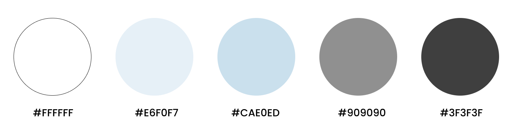

Start Page
Welcome to MemoLog! Log in with email or create your account to get started.
Mobile App Design

UI Design
Mobile App Design
Adobe Illustrator
1 Month (2023)
MemoLog is a note app designed for archiving your memories and other personal notes. With a passion for cherishing memories through journaling, I created MemoLog to help users capture moments and preserve their treasured experiences. Whether it's archiving recipes, travel trips, or crochet patterns, MemoLog provides a space for your memories to be kept and cherished.
To make capturing information and memories both effortless and beautiful.
To ensure a smooth user experience, I began the design process by creating a flow chart that outlines the app's pages and the ways users will interact with it.
The app's blue accent color evokes a calm and peaceful feeling, providing a soothing contrast to the often cluttered nature of notes. By keeping the color palette simple, we direct the emphasis to the content of each note.
The app icon embodies MemoLog's minimalist design and includes distinct elements like the quick add button.

Welcome to MemoLog! Log in with email or create your account to get started.

Access all your memories and notes from this page, with folders to separate different categories. Use our quick add button on the bottom right for fast and convenient note logging.

Create notes with ease using options to add text, images, checklists, and bullet points.

Enjoy a beautifully designed interface for storing valuable information and cherished memories.

Find notes with the quick search feature, or create a new note using the quick add button.